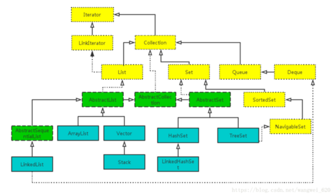
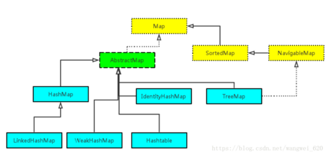

| list | 有序，可重复 | ArrayList:数组，查询快，增删慢。线程不安全. Vector:数组，查询快，增删慢。线程安全. LinkedList:链表，查询慢，增删快。线程不安全 |
| set | 无序(不严谨)，唯一 | HashSet:无序,唯一,哈希表实现,通过hashCode()和equals()保证唯一。 LinkedHashSet:继承自hashset,底层是链表和哈希表。(FIFO插入有序,唯一) TreeSet:底层是红黑树。(唯一，有序) |
| map | KV形式的键值对 | TreeMap:有序,不是线程安全的。 HashMap:无序,不是线程安全的,HashMap允许null值（key和value都允许） HashTable:无序,线程安全的,不允许null值, |
Set 接口继承Collection，用于存储不含重复元素的集合。
底层是哈希表，当插入元素时，HashSet会调用该对象的hashCode()方法得到hashCode，然后根据hashCode决定该对象在哈希表中的存储位置。 (这里有个问题，如果hashcode不是均匀分布的，而是集中在一个区域，极端情况下，hash表会变成链表)
HashSet去重原理：通过equals()方法比较，且其hashCode()方法返回值也相等。 （可以通过覆写hashCode和equals方法改变其去重规则，进行自定义去重）
TreeSet底层是红黑树;加入元素时，必须加入同类型的对象，否则会发生ClassCastException异常，因为TreeSet会调用集合元素的compareTo()方法来比较元素之间的大小关系（自然排序）。
compareTo()方法的返回值决定了顺序:
其次，TreeSet也可以通过比较器排序。
继承自HashSet,底层是链表和哈希表。
list的实现类有ArrayList,Vector,LinkedList...其中ArrayList和Vector很相似，均是以数组作为底层实现，不同之处在于Vector是线程安全的。
ArrayList基于数组实现,不是线程安全的,内部维护了一个可变长的对象数组,集合内所有元素存储于这个数组中，并实现该数组长度的动态伸缩。
ArrayList使用数组拷贝来实现指定位置的插入和删除。
LinkedList内部以链表的形式来保存元素，因此随机访问集合时性能较差，但插入,删除元素时性能较好。
LinkedList不仅实现了List接口,还实现了Deque接口，可以被当成双端队列来使用，即可被当成“栈”来使用，也可以当成队列使用。
Map集合用于保存映射关系的数据，Map集合中保存了两组值，一组是 key， 一组是 value。
Map的key不能重复。
key和value之间存在单向一对一的关系， 通过key，能找到唯一确定的value。
Map将key和value封装至一个叫做Entry的对象中，Map中存储的元素实际是Entry。只有在keySet()和values()方法被调用时，Map才会将keySet和values对象实例化。
key 是通过hash表来存储，value是通过链表来存储。
HashMap将Entry对象存储在一个数组中，并通过哈希表来实现对Entry的快速访问。 （通过key的哈希值计算Entry在数组中的index，以此访问value） （拉链法，解决hash碰撞）
几乎和HashMap一样，都是通过数组存储Entry，以key的哈希值计算Entry在数组中的index，用拉链法解决哈希冲突。二者最大的不同在于， Hashtable是线程安全的，其提供的方法几乎都是同步的。
ConcurrentHashMap是HashMap的线程安全版，提供比Hashtable更高效的并发性能。
Hashtable 在进行读写操作时会锁住整个Entry数组，这就导致数据越多性能越差。
ConcurrentHashMap使用分离锁的思路解决并发性能，其将 Entry数组拆分至16个Segment中，以哈希算法决定Entry应该存储在哪个Segment。这样就可以实现在写操作时只对一个Segment 加锁，大幅提升了并发写的性能。
在进行读操作时，ConcurrentHashMap在绝大部分情况下都不需要加锁，其Entry中的value是volatile的，这保证了value被修改时的线程可见性，无需加锁便能实现线程安全的读操作。
ConcurrentHashMap它不能保证读操作的绝对一致性。ConcurrentHashMap保证读操作能获取到已存在Entry的value的最新值，同时也能保证读操作可获取到已完成的写操作的内容，但如果写操作是在创建一个新的Entry，那么在写操作没有完成时，读操作是有可能获取不到这个Entry的。
参考资料
https://blog.csdn.net/sdgihshdv/article/details/72566485
https://blog.csdn.net/wangwei_620/article/details/82049502